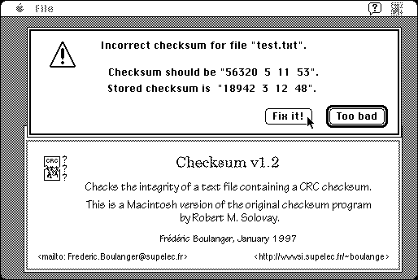

Download
Checksum-US-1.2.zip (45K) CheckSum 1.2 repackaged into a zipped hfs disk image and checksum file. The disk image can be mounted with Mini vMac.
Checksum-US-1.2.sea.bin (66K) CheckSum 1.2 in the original format.
copyright: Frédéric Boulanger
mod date: Jan 28, 1997
license: shareware
official url :
Index of /boulanger/download/Mac
Finds a CRC checksum of a text file, and stores the checksum in the file itself. It can then verify this checksum. Requires System 7. Based on Checksum by Robert M. Solovay, and DropShell by Leonard Rosenthol, Marshall Clow and Stephan Somogyi. Source code is available (below).

Download Source
Checksum-src-1.2.zip (274K) CheckSum 1.2 source repackaged into a zipped hfs disk image and checksum file. The disk image can be mounted with Mini vMac.
Checksum-src-1.2.sea.bin (307K) CheckSum 1.2 source in the original format.
If you find these downloads useful, please consider helping the Gryphel Project, which hosts them.
Here are the md5 checksums for the downloads, signed with Gryphel Key 5:
--------- GRY SIGNED TEXT --------- 521c4700eca99753f7f7b2b432fb3d95 Checksum-US-1.2.zip 0cd43f37ea659a1aeea7e8240fd8eaf2 Checksum-US-1.2.sea.bin f6a2ff02c9c5ee520a3ed20790dc0120 Checksum-src-1.2.zip a14812199541bdcce4f0d07261788aee Checksum-src-1.2.sea.bin ------- BEGIN GRY SIGNATURE ------- Gry/4Xa8CFcUzxdN/Hb2UYQVn9og+jEQ6nz2XUEBcPyYB2jVpwCNgLWNrUBR/kLi rVxUu3ehqESBFeUF6BK0iBU6Ig7XwNBdA7LL/PD5TQRT5i3sOvLjdGNazlv5UAbr unwCaUvRevzuszX3b3259xfVgjqpzYwtVcbzFVus32+d7BHxtat21PtWH8Jhvmte -------- END GRY SIGNATURE --------